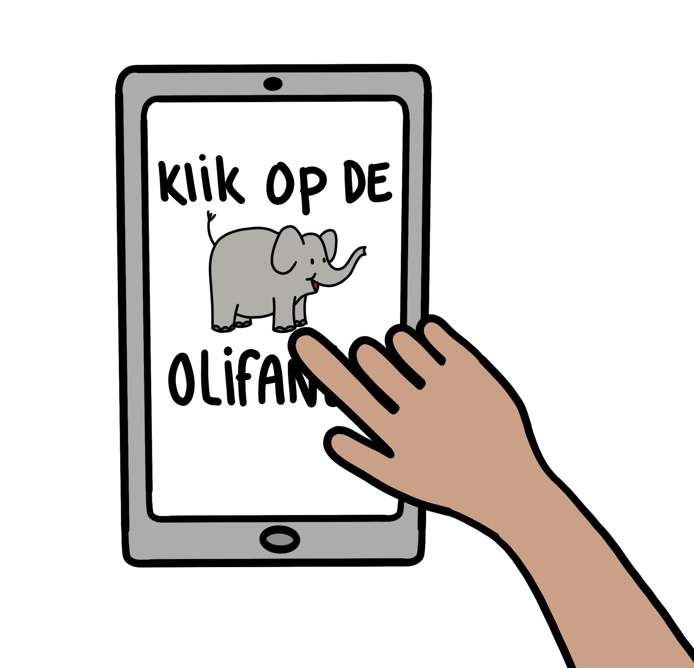
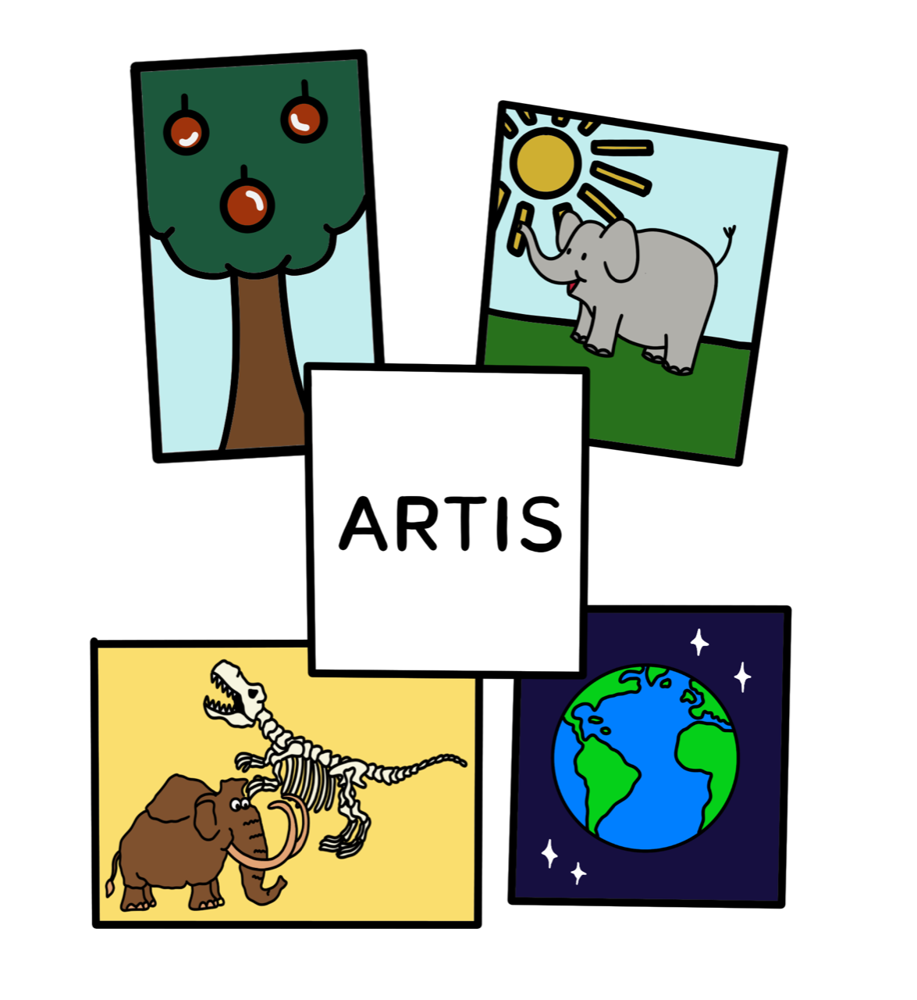
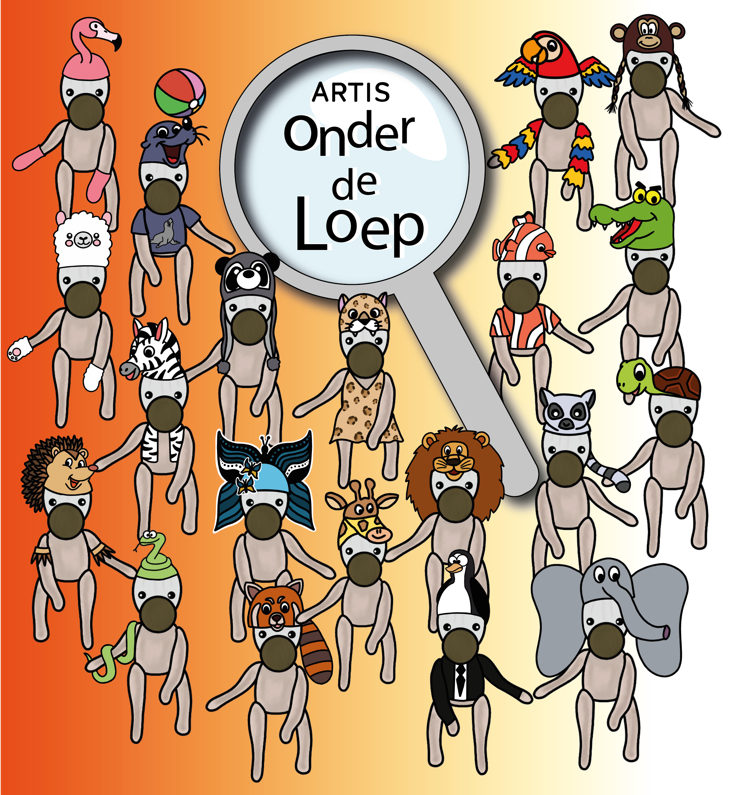

Projects
Project: Artis Royal Zoo
Focus: UX - UI - New tech
The goal for Project - Artis Royal Zoo Park was to create a concept where children could determine the way through the Artis Zoo themselves. Most of the time, parents will choose where to go next. In my concept, children (ages 7 till 12) are in charge of navigating throughout the park. Navigating was the most important feature of the concept, but you also had to make sure that other factors were thought of. E.g., busy crowds, the role of parents.
The process
Research
Research has shown that children learn faster by playing an adventurous game, being challenged, or having to follow a story. In my concept “Artis de Partis” (the Artis mascot) had lost his family somewhere in the park. The children can help him find his family by using the magnifying glass tablet. They can choose (themselves) wherever they want to go, take quizzes along the way, and catch the family members in Augmented Reality.
Struggles during the process
My first idea kept me from exploring other ideas. I was too focused on this specific idea. It made it very difficult to develop other ideas and delayed the process. In the beginning, I wasn't sure on which device I could execute my idea. I only thought about using a tablet or a smartphone. Eventually, I started thinking “outside the box” and my creativity opened a can full of good ideas. One of those creative ideas was this "magnifying glass tablet".
How did I solve this
I didn't want to let go of my first idea, but I looked at it again from a new perspective. Writing down all kinds of keywords made the final concept increasingly clear. The words "quest" and "adventure" were ultimately the keywords that led me to go for a magnifying glass tablet. That fits my concept perfectly.
Important insights for next projects
When I start a new project, I will try to look beyond my first ideas. Staying open-minded and not committing to your first idea, will help you not miss out on so many fun, creative ideas. By writing down keywords, you can come up with very cool, new ideas. Just write down everything that comes to mind. Afterward, you can choose the best things.
What did I think of this project?
It was a fun project because I'm a big Artis Royal Zoo fan myself. When I saw that this project was available, I started working on ideas very enthusiastically. By making illustrations (something that I like to do), I made the concept clearer for myself and other readers. The result made me very proud. After a somewhat difficult start, I got the process off to a good start.
